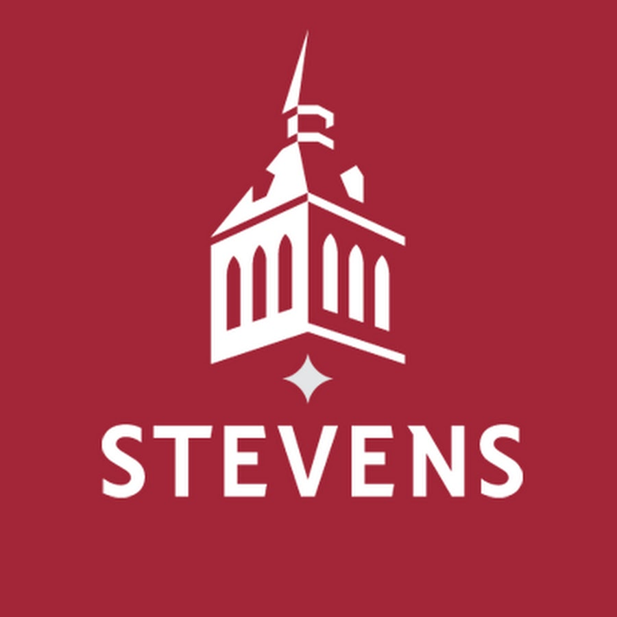
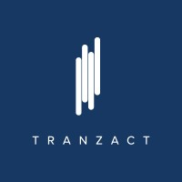
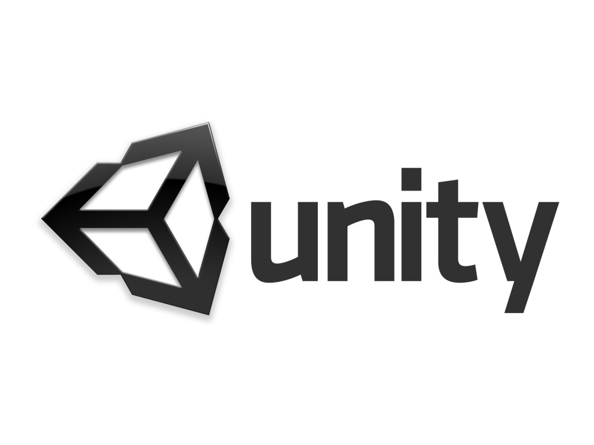
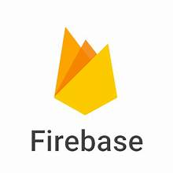
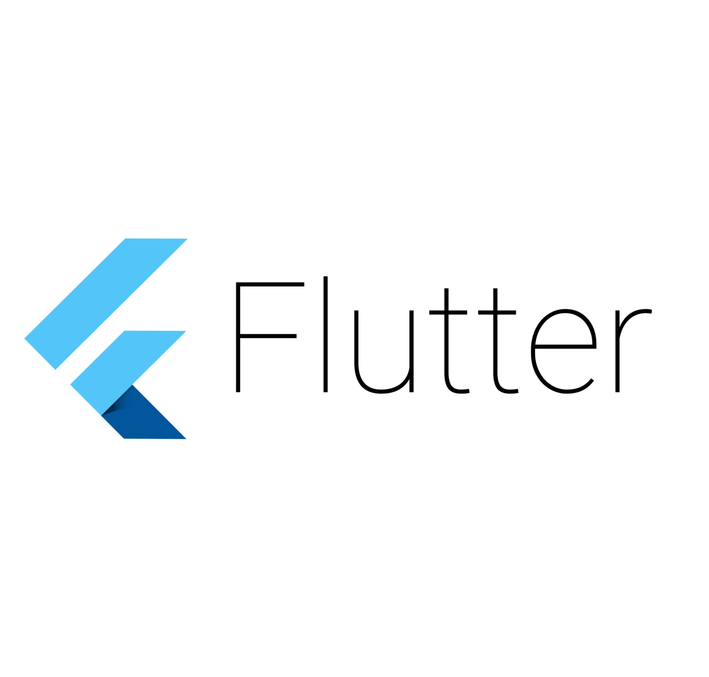

Resume
Education

Stevens Institute of Technology
May 2026 - December 2027
Master of Science: Computer Science
Area of Focus: Artificial Intelligence & Machine Learning
Part-Time - Available for Full-Time Employment
Key Coursework: Agile Methods for Software Development, Algorithms, Mathematical Foundations of Machine Learning, Systems Programming.
Villanova University
August 2022 – May 2026
Bachelor of Science: Computer Science
Minors: Cybersecurity, Engineering Entrepreneurship
Activities: St. Thomas of Villanova Day of Service Volunteer, Sports Analytics Club, Programming Team, Villanova Club Baseball, Intramural Sports.
Key Coursework: Algorithms & Data Structures I, Algorithms & Data Structures II, Analysis of Algorithms, Applied Machine Learning, Computer Systems I, Computer Systems II, Computer and Network Security, Design Thinking and Customer Discovery, Digital Forensics, Discrete Structures, Emerging Tech in Product Innovation, Engineering a Creative Mindset, Full Stack Web Dev, Info Security & Protection, Linear Algebra for Computing, Organization of Programming Languages, Overview of Cybersecurity, Platform Based Computing, Principles of Database Systems, Product & Service Prototyping, Senior Projects, Software Engineering, Statistics for Computing, Theory of Computation.
Work Experience

TRANZACT – Information & Cyber Security Intern
June 2025 – August 2025
- Assessed control effectiveness across PCI DSS and HIPAA frameworks, applying NIST SP 800-53 control families and security risk assessment processes to support enterprise cybersecurity risk management.
- Tracked and updated 5 active remediation plans in Archer, coordinating with cross-functional teams to monitor findings, outstanding actions, and progress toward closure.
- Supported 3 third-party due diligence questionnaires and vendor risk assessments to evaluate partner security posture and identify control and compliance concerns.
- Prepared 6 internal teams for external security assessments by documenting requirements, developing control-aligned responses, and conducting mock interview sessions.
- Participated in weekly meetings with auditors and internal stakeholders to communicate assessment status, remediation progress, outstanding issues, and next steps.
- Completed hands-on workshops across threat hunting, event monitoring, and vulnerability management, strengthening technical cybersecurity knowledge.
Games For Love – Game Developer Intern
June 2024 – September 2024
- Collaborated with a team of interns as the Lead Programmer/Level Designer to develop a multi-level 2D mining game called Culinary Caverns, utilizing Unity Game Engine and C# scripting.
- Programmed various game features including player movement and animation, terrain seed generation, abilities for the player to break and collect blocks, and a dynamic inventory UI system to store and show collected items.
- Implemented background music, sound effects, and level completion cues to enhance the user experience.
- Contributed to game and level design by coordinating and facilitating collaboration between team members through the use of GitHub and Trello, and organizing Discord meetings.
- Created for submission to Games for Love's Jampack to be featured in a charity bundle sold to raise funds to support children in hospitals.
Skills
Programming Languages
Java, JavaScript, C, C#, Python, HTML, CSS, Dart, R, Ruby, SQL.
Technical Skills
Governance, Risk & Compliance: PCI DSS, HIPAA, NIST SP 800-53, Third-Party Risk Assessments, Vendor Risk Management, Security Audits, Regulatory Compliance, Security Controls, Secure Development Lifecycle (SDLC).
Web/Mobile: React, React Native, FastAPI, Firebase, Firestore, MongoDB, Expo, Bootstrap, Flutter, WebGL, Axios, Webflow, JSON.
ML/Data: PyTorch, scikit-learn, FAISS, Pandas, NumPy, Matplotlib, Seaborn, Pillow, Jupyter.
Cybersecurity/Systems: Archer, Microsoft Defender, Cyble Vision, FTK Imager, Linux/Unix, Splunk, Wireshark, VirtualBox.
Other: Git, GitHub, VS Code, Eclipse, Android Studio, Unity, JUnit, Figma, LucidChart, Trello, Excel, PowerPoint, Word, GitHub Copilot, Claude, Lovable.




Other
NYS Seal of Biliteracy for English (Native) and Spanish (Limited Working Proficiency).